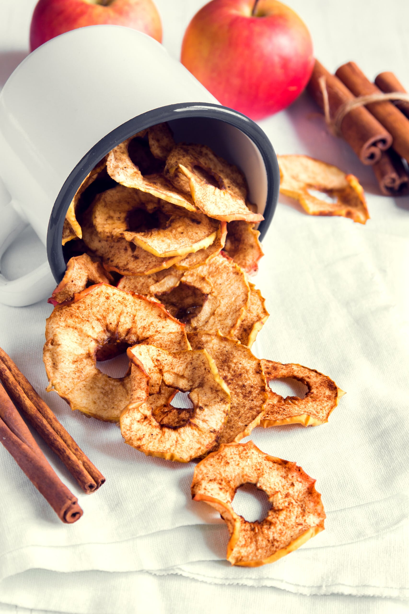
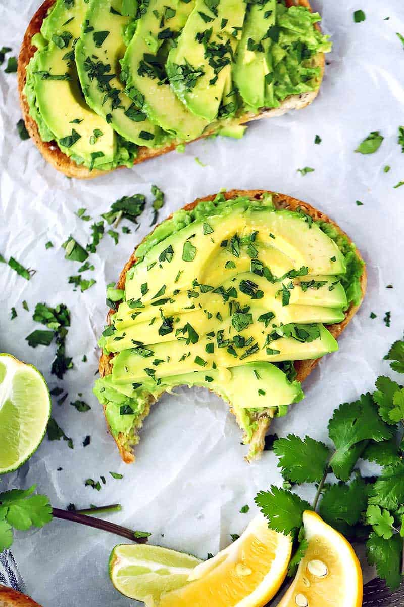

Recipes for snacks
Cinnamon apple chips
Ingredients:
- 2 apples, thinly sliced
- 2 tsp. granulated sugar
- 1/2 tsp. cinnamon
Directions:
- Preheat oven to 200°. In a large bowl, toss apples with sugar and cinnamon.
- Place a metal rack inside a rimmed baking sheet. Lay apples slices on top of rack, spacing them so that no apples overlap.
- Bake for 2 to 3 hours, flipping apples halfway through, until apples dried out but still pliable. (Apples will continue to crisp while cooling.)


Avocado toast
Ingredients:
- 1 avocado peeled and seeded
- juice of 1/2 lime
- salt & pepper to taste
- 2 slices whole grain bread or bread of choice
Directions:
- Toast 2 slices of whole grain in a toaster until golden and crispy
- In a small bowl combine and mash the avocado, cilantro, lime, and salt + pepper to taste
- Spread half of the mixture on each slice of toasted bread
Homemade Energy Balls
Ingredients:
- 1 cup oats
- 2/3 cup toasted shredded coconut (sweetened or unsweetened)
- 1/2 cup peanut butter
- 1/2 cup flaxseed
- 1/2 cup chocolate chips
- 1/3 cup honey
- 1 tablespoon chia seeds
- 1 teaspoon vanilla extract
Directions:
- Stir everything together in a large mixing bowl until it is thoroughly combined.
- Cover the mixing bowl, put in the fridge and wait for around 30 minutes. This will help the mixture stick together more easily!
- Roll the mixture into 2 cm balls.
- Then enjoy immediately!


Oven Baked Zucchini Chips
Ingredients:
- 1 zucchini
- 1/3 cup whole-grain breadcrumbs
- 1/4 cup finely grated Parmesan cheese
- 1/4 teaspoon black pepper
- Kosher or Sea Salt
- 1/8 teaspoon garlic powder
- 1/8 teaspoon cayenne pepper
- 3 tablespoons milk
Directions:
- Preheat oven to 425 degrees.
- Cut the zucchini into small slices.
- Cobine in a small mixing bowl, breadcrumbs, Parmesan cheese, black pepper, salt, garlic powder and cayenne pepper.
- Dip zucchini slices into milk and dredge into bread crumbs to coat both sides.
- Put the zucchini on a non-stick cookie sheet.
- Bake them for 15 minutes, turn over and continue until golden, approximately 10-15 minutes.
- Allow to cool to room temperature.
- TIP: Zucchini Chips will continue to get crispier while cooling.